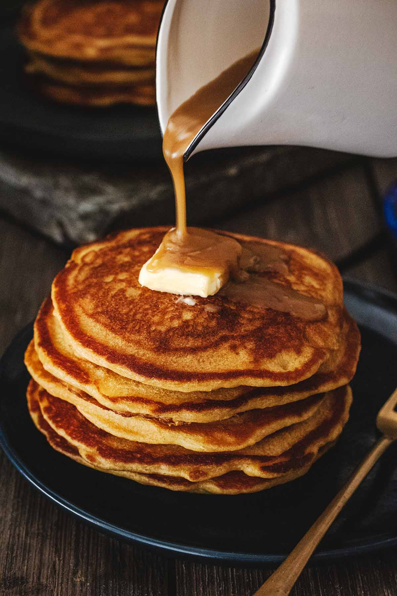

How they're made: Butterscotch Pancakes

Description
Butterscotch pancakes are perfect when you're looking for something sweet for breakfast. The batter is flavored with a foolproof homemade butterscotch sauce and the recipe makes enough sauce to pour over the top. Double yum!
Ingredients
-
Butterscotch Sauce
- 1/2 cup unsalted butter
- 1/2 cup dark brown sugar packed
- 1 cup heavy cream
- 1/2 teaspoon kosher salt
- 2 teaspoons vanilla extract
-
Pancakes
- 1 1/2 cup all-purpose flour
- 1 1/2 teaspoon baking powder double acting
- 3/4 teaspoon baking soda
- 1/4 teaspoon salt
- 2 large eggs
- 1 cup buttermilk
- 1 cup butterscotch sauce
Steps
-
Butterscotch Sauce
- In a medium saucepan, melt the butter over medium heat.
- Add the brown sugar and stir to combine.
Bring to a boil then reduce to a slow and steady boil and continue cooking, stirring frequently, for 2-3 minutes.
- Carefully add the heavy cream and salt. Stir to combine. Bring mixture back to a slow boil. While stirring, cook another 3-4 minutes.
- Remove from heat and stir in vanilla extract and Scotch, if using.
- Set aside and allow to cool. Sauce will thicken as it cools.
-
Pancakes
- In a large bowl, stir together the flour, baking powder, baking soda and salt. Set aside.
- In a medium bowl, whisk together the eggs, buttermilk, homemade butterscotch sauce (recipe above) and melted butter.
- Add the wet mixture to the dry mixture and stir until incorporated. Do not overmix. The batter will still be slightly lumpy.
- Heat a griddle or skillet over medium heat. Coat generously with butter, then ladle ⅓ cup batter onto griddle for each pancake.
- Cook until the edges are golden and bubbles form and pop on the surface, about 2-3 minutes. Flip and continue cooking, about 2-3 minutes longer.
- Serve!